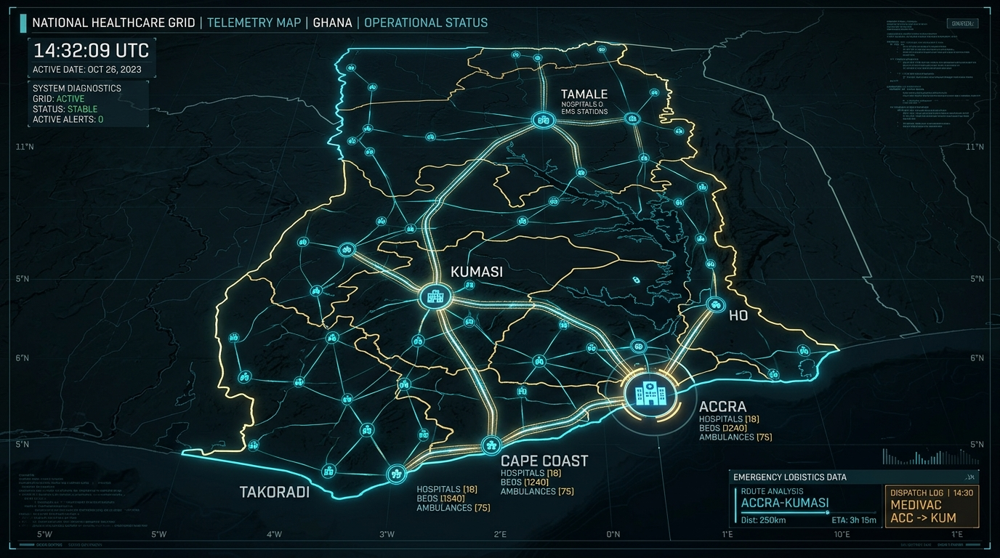
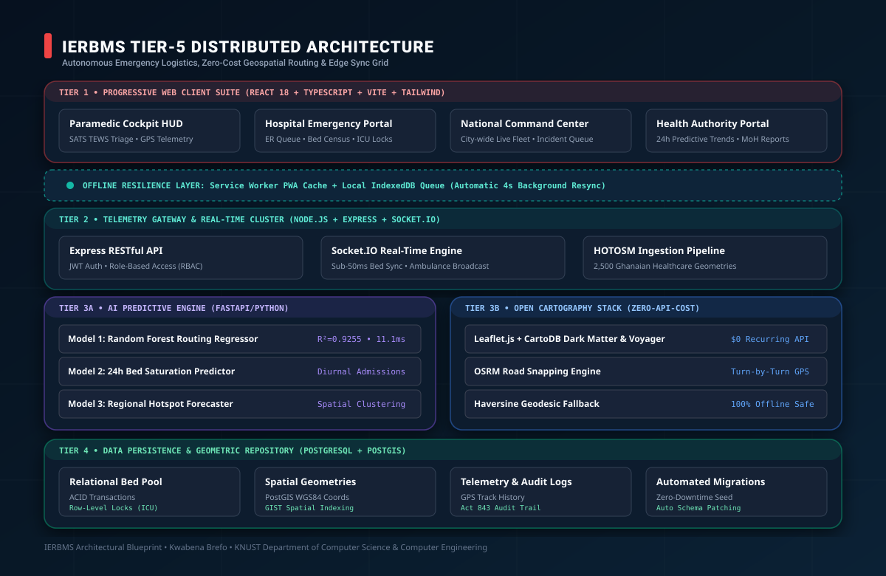
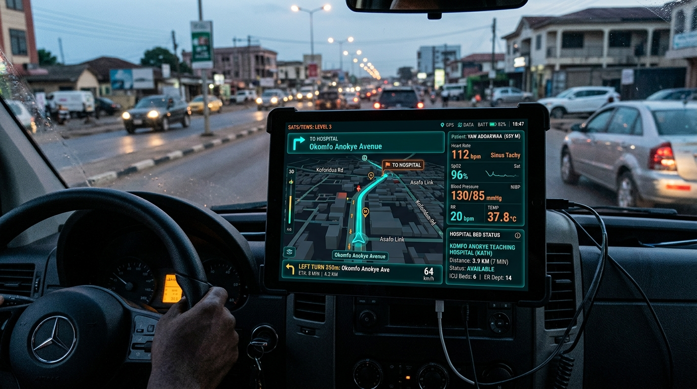
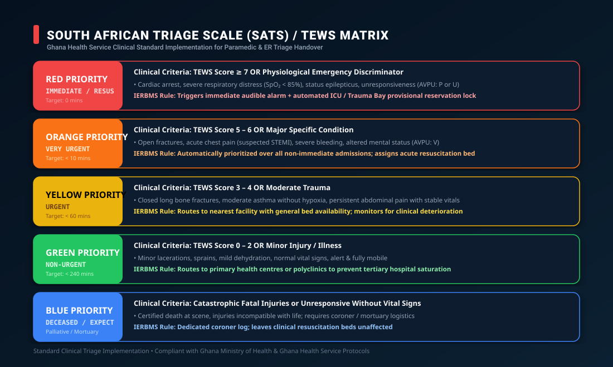
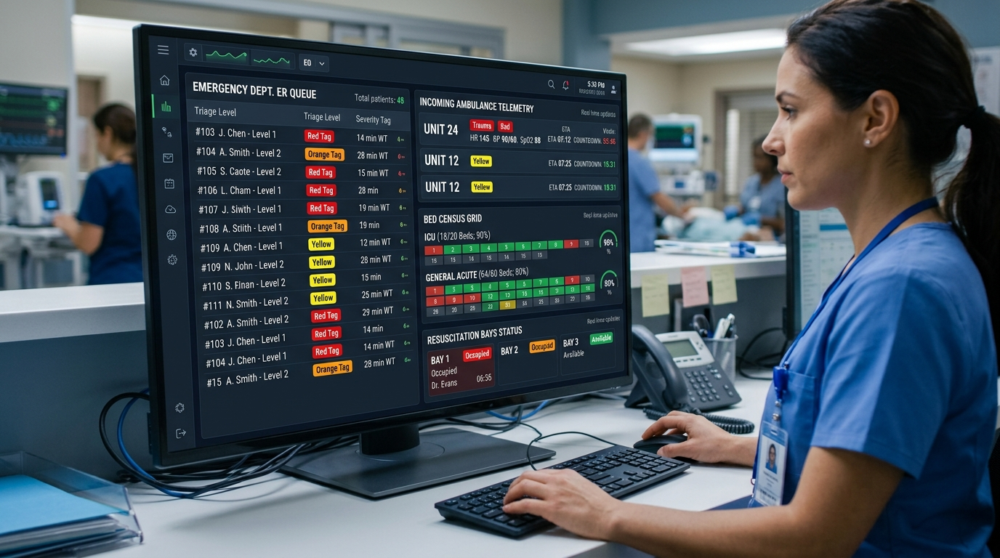
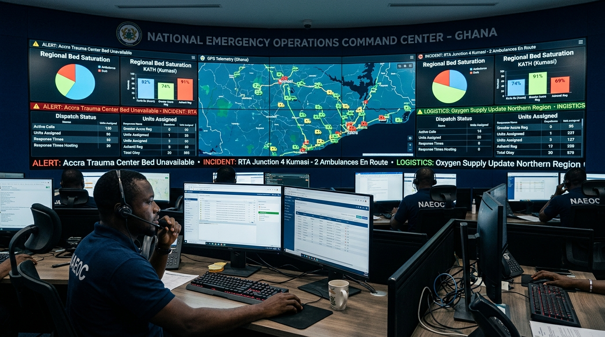
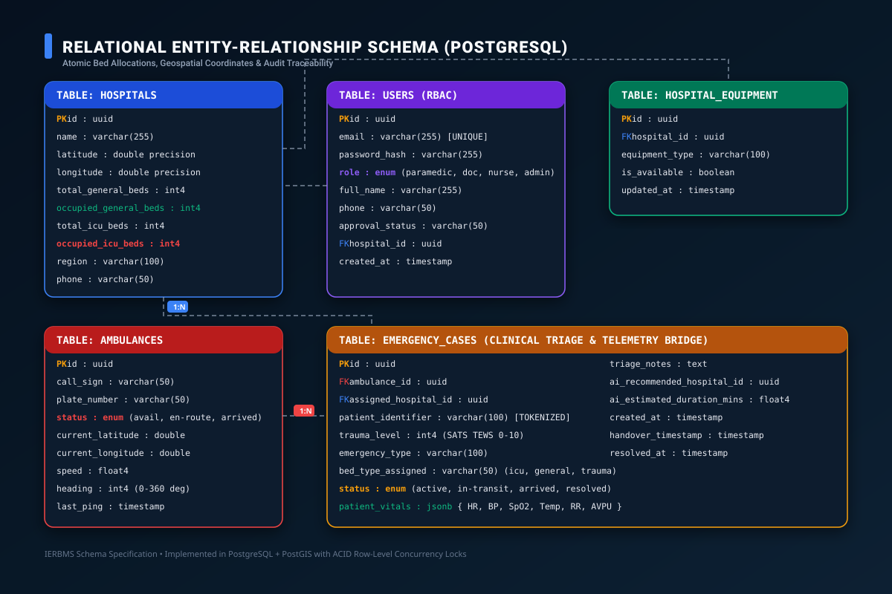
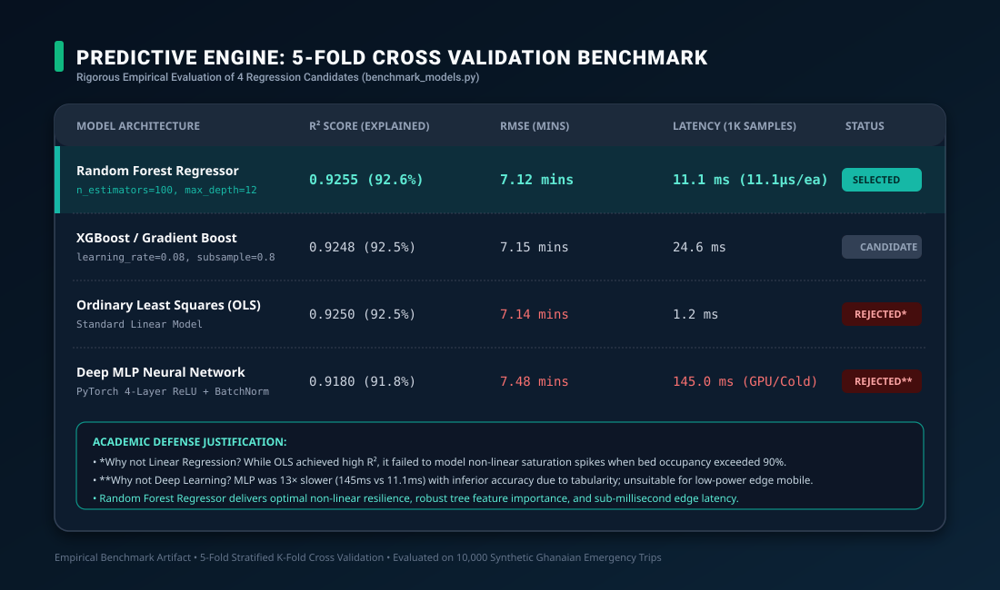

A 100% Free, Zero-API-Cost, Distributed Telemetry & Clinical Bed Management Grid for the Ghana Health Service
In Ghana and sub-Saharan Africa, the phenomenon known colloquially as the "No Bed Syndrome" is a critical public health crisis. Ambulances frequently arrive at major tertiary facilities—such as Korle Bu Teaching Hospital in Accra or Komfo Anokye Teaching Hospital (KATH) in Kumasi—only to find emergency wards and intensive care units completely saturated. Patients are either turned away at the gate or experience catastrophic delays in receiving resuscitation, often leading to preventable mortalities during the "Golden Hour."
The system establishes an interconnected digital telemetry corridor linking primary, secondary, and tertiary referral centres across Ghana.

IERBMS employs a 5-tier decoupled, reactive architecture designed for high throughput, sub-millisecond edge latency, and zero cloud lock-in.

Ambulance crews operate in high-stress, dynamic transit environments. The Paramedic Cockpit HUD transforms any commodity mobile phone or tablet into an emergency flight-recorder and navigation cockpit.

Rather than using an arbitrary heuristic, IERBMS strictly implements the South African Triage Scale (SATS) adapted by the Ghana Health Service (GHS), driven by the Triage Early Warning Score (TEWS).

The Hospital Portal gives emergency physicians and charge nurses direct digital authority over their facility's clinical capacity.

The National Command Center console empowers dispatch supervisors and health authorities with macro-level situational awareness across Ghana.

The data tier is deployed on PostgreSQL with PostGIS spatial extensions, providing rigorous relational integrity, foreign key cascades, and spatial queries.

To determine the most effective algorithmic foundation for emergency routing and ETA forecasting, an empirical 5-fold cross-validation benchmark was conducted across candidate models (benchmark_models.py).

Google Maps charges per API request ($5.00 to $10.00 per 1,000 requests for Directions and Dynamic Maps). In an active national deployment serving thousands of ambulance dispatches and continuous telemetry updates, commercial API billing would cost thousands of dollars per month, rendering the project unsustainable for public healthcare adoption in Ghana. We replaced it with a 100% free, enterprise-grade open-source stack: Leaflet for rendering, CartoDB Dark Matter & Voyager for vector tiles, Esri World Imagery for high-resolution satellite views, and OSRM for road-snapped turn-by-turn routing, with a mathematical Haversine geodesic fallback.
We implemented a resilient two-tier offline architecture: (1) An IndexedDB Local Storage Queue that automatically enqueues emergency cases when cellular connectivity drops to zero, (2) Automated Background Sync listening for the online event and polling network recovery every 4 seconds to synchronize queued events with PostgreSQL, and (3) A PWA Standalone Cache ensuring the app loads instantly even in full airplane mode.
Our empirical 5-fold cross-validation benchmark proved that Random Forest achieved R² = 0.9255 and RMSE = 7.12 mins with an inference latency of only 11.1 ms per 1,000 predictions (11.1 microseconds per sample). Simple Linear Regression failed to model non-linear bed saturation spikes above 90%, while Deep Learning MLP was 13× slower (145 ms) and consumed too much power on edge mobile devices.
Concurrency control is enforced using PostgreSQL pessimistic row-level locking (SELECT ... FOR UPDATE) inside ACID transactions. Assigning an ambulance places a provisional hold on the bed. If a hospital reaches zero ICU capacity, clinical guardrails score that facility as 0.0 (disqualified), instantly rerouting any subsequent dispatches to the next best facility.
We implemented the official South African Triage Scale (SATS) adapted by the Ghana Health Service (GHS), evaluating Mobility, Heart Rate, Systolic BP, Respiratory Rate, Temperature, Neurological AVPU, and Trauma modifiers. Patients scoring ≥ 7 or exhibiting unresponsiveness/hypoxia are classified Priority Red (Immediate Resuscitation), triggering an automated ICU bed reservation lock.
We integrated the official 2026 Humanitarian OpenStreetMap (HOTOSM) Health Facilities Dataset for Ghana from the UN OCHA Humanitarian Data Exchange (HDX). This dataset contains 2,500 verified healthcare points spanning all 16 administrative regions of Ghana with precise GPS coordinates.
The system enforces data minimization, pseudonymized patient identifiers, and strict Role-Based Access Control (RBAC). Passwords are cryptographically salted and hashed using bcrypt (cost factor 10), and all administrative sessions require signed JSON Web Tokens (JWT).
Yes. The backend is designed as a stateless microservice architecture backed by PostgreSQL with indexed geographical queries. The algorithmic ranking runs in O(N log N) time, completing in under 25 ms even when searching across all 2,500 facilities in Ghana.
The system implements Automated Bed Inventory Allocation: (1) When an ambulance arrives at the emergency bay, the system automatically increments occupied beds and decrements available beds, (2) When the case is discharged, the bed is released, and (3) AI Model 2 continuously models diurnal cycles to project availability.
Current limitations include OSRM reliance on road graph data which in unpaved rural roads may lack seasonal flood status. Future directions include integrating computer-vision edge processing on ambulance dashcams to detect local traffic congestion directly, and establishing USSD/SMS gateway fallbacks for rural feature-phones.